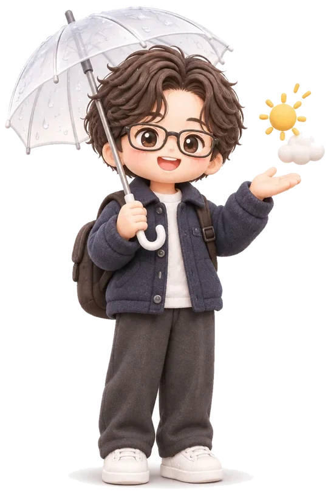
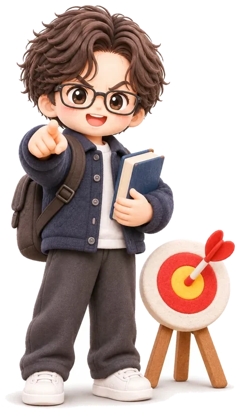

親密性
安心できる人と深くつながると、力が出やすい資質です。
調子がいい時信頼できる人と、ゆっくり深く話せている。
うまくいかない時は？
こうなりがち大切な関係がゆれると、ほかのことにも手がつきにくくなるかも。
そんな時は信頼できる人に、早めに「ちょっとしんどい」と言ってみる。
🦁 minさん
ストレングスファインダーの上位資質と、ご本人のプロフィールから、minさんの「こうかも？」を集めました。
 声かけてくれたら
声かけてくれたらまず、ならべてみます
プロフィールに書いてあること
★ いちばんの見どころ
「超人見知り」と「親密性1位」は、反対のようで、つながっているのかもしれません。親密性は、たくさんの人より、よく知っている人と深くつながるほうに力が出やすい資質だからです。
最初は静かでも、安心できた相手には、長所を見つけて、分かりやすく言葉にして届ける。韓国語の先生という仕事にも、その力が出ているのかもしれません。
調子がいい時も、そうでない時も
「うまくいかない時は？」を押すと、なりやすいことと、ヒントが開きます。
安心できる人と深くつながると、力が出やすい資質です。
調子がいい時信頼できる人と、ゆっくり深く話せている。
こうなりがち大切な関係がゆれると、ほかのことにも手がつきにくくなるかも。
そんな時は信頼できる人に、早めに「ちょっとしんどい」と言ってみる。

ぶつかるより、同じ答えを探したくなる資質です。
調子がいい時意見がちがっても、みんなが納得できる形を見つけられる。
こうなりがちケンカを避けて、自分の本音を飲み込むかも。
そんな時は「ぼくはこっちが好き」を、1つだけ言ってみる。
進む前に、気をつける所を見つけやすい資質です。
調子がいい時見落としに気づいて、大きな失敗を防げる。
こうなりがち心配が増えて、なかなか決められなくなるかも。
そんな時はいちばん心配なことを1つ書いて、小さく試す。

予定が変わっても、その場に合わせやすい資質です。
調子がいい時急な変化も、楽しみながら乗りこなせる。
こうなりがち目の前の対応が続いて、先の予定が後回しになるかも。
そんな時は今週やることを、1つだけ先に決めておく。

相手の気持ちを感じ取りやすい資質です。
調子がいい時言葉にならない気持ちに気づいて、そばにいられる。
こうなりがち人の気持ちを受け取りすぎて、自分まで疲れるかも。
そんな時はひとりの時間を作って、自分の気持ちに戻る。

静かに考える時間で、整いやすい資質です。
調子がいい時ひとりで考えて、自分の答えが見えてくる。
こうなりがち頭の中で同じことを、ぐるぐる考え続けるかも。
そんな時は紙に書き出すか、誰かに声に出して話す。

決めた的に向かって、集中しやすい資質です。
調子がいい時やることが決まると、まっすぐ進める。
こうなりがち集中しすぎて、まわりや体調が見えにくくなるかも。
そんな時は休む時間も、先に予定へ入れておく。
人の小さな伸びを見つけると、うれしくなる資質です。
調子がいい時教えている人や身近な人の成長を、一緒に喜べる。
こうなりがち人を応援するほうに回って、自分を後回しにするかも。
そんな時は今日の自分の「できた」も、1つ数える。
認められると、もっと力が出やすい資質です。
調子がいい時「ありがとう」「すごいね」で、もっとがんばれる。
こうなりがちがんばりが見えてもらえないと、しぼんでしまうかも。
そんな時は「ここを見てほしい」を、身近な人に伝えてみる。
出来事のつながりに、意味を感じやすい資質です。
調子がいい時大変なことにも意味を見つけて、心が落ち着く。
こうなりがち「仕方ない」で、がまんしすぎるかも。
そんな時はそれでも変えられることを、1つ探してみる。
強みの、裏側も
資質の組み合わせから見た一般的な傾向です。当てはまらなければ、気にしなくて大丈夫です。
相手の気持ちが分かるぶん、自分の希望を後回しにしやすいかもしれません。
小さなことから「ぼくはこうしたい」を言ってみる。
確かめたいことが増えて、頭の中で止まってしまう日があるかもしれません。
「今日はここまで決める」と、小さく区切る。
緊張しているだけなのに、そう見えてしまうことがあるそうです。
最初に「人見知りです」と言えたら、それで十分です。